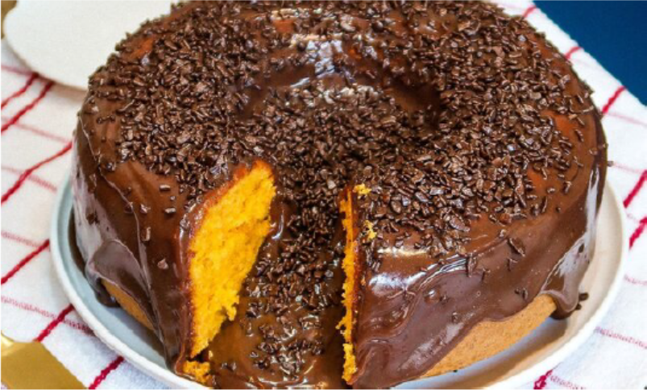

Receitas de Salgados
Os salgados são um verdadeiro tesouro culinário. São opções deliciosas que podem ser consumidas em diversas ocasiões, desde lanches rápidos até refeições completas. O sabor intenso e variado dos salgados é uma das principais razões pelas quais eles são tão amados por pessoas de todo o mundo.Se você deseja experimentar algumas receitas deliciosas em casa, confira algumas sugestões abaixo:
Bolo de chocolate
Ingredientes.
- 2 xícaras de frango cozido e desfiado
- 1 cebola picada
- 2 dentes de alho picados
- 2 colheres de sopa de azeite
- 1/2 xícara de molho de tomate
- 1/2 xícara de água
- 1 colher de sopa de amido de milho
- 1/2 xícara de ervilhas frescas ou congeladas
- 1/2 xícara de milho verde em conserva
- Sal e pimenta-do-reino a gosto
- 1 massa folhada pronta
- 1 ovo batido
Modo de Preparo
- Preaqueça o forno a 180°C.
- Em uma panela, aqueça o azeite e refogue a cebola e o alho até ficarem macios.
- Adicione o frango desfiado e refogue por alguns minutos.
- Acrescente o molho de tomate e a água e deixe cozinhar por 5 minutos.
- Dissolva o amido de milho em um pouco de água e adicione ao refogado de frango para engrossar o molho.
- Adicione as ervilhas e o milho verde e tempere com sal e pimenta a gosto.
- Abra a massa folhada e forre uma forma de torta. Coloque o recheio de frango por cima.
- Cubra a torta com a massa folhada restante, fazendo alguns furos na superfície para que o ar escape.
- Pincele o ovo batido sobre a massa para dourar.
- Asse a torta por 30 a 40 minutos ou até que a massa esteja dourada e crocante.
- Sirva quente.